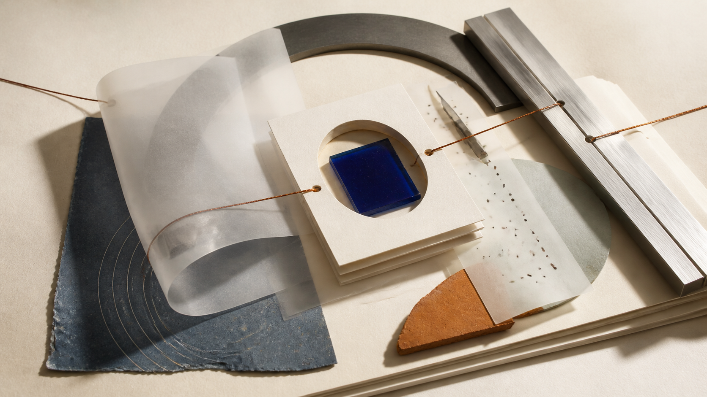

Socrates Studio
Practical learning resources for people who want to make difficult subjects clearer, one useful question at a time.
Featured learning paths
Short, useful courses for turning an uncertain beginning into a repeatable practice. Work through the idea, keep the important connections, and take the next question with you.
Browse the library
A practice, not a performance
Learn at the pace an idea asks for.
The Studio gives you a place to make a first attempt, test an explanation, and return when you are ready to see a different connection.
Open SocratesResources that stay close to the work.
We make guides for the places where learning usually slows down: beginning, explaining, remembering, and picking up a subject again.
Each is designed to be used alongside your own notes, questions, and changing point of view.